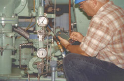
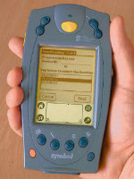

Pacific Gas and Electric Co. has increased reliability and reduced maintenance costs
at its compressor stations by employing handheld, barcode-reading personal
digital assistants (PDAs) to collect operating data from sensors not
connected to the company's SCADA system.
The solution employs
a custom data collection application running on Palm OS devices with
integrated barcode scanners. Data collected with the application are
compliant with standard ODBC databases. The system provides PG&E's pipeline
and compressor station overseers with:
- Redundant
monitoring of equipment and systems already wired into each compressor
station's local SCADA system
- Accurate and
economical "manual" monitoring of other critical data points that, for
various reasons, are not currently accessible to local station SCADA
- Truly interactive
communication between front-line operators / technicians and PG&E's
corporate work management systems.
PG&E's eight
compressor stations in its California natural gas transmission pipeline
system are linked via SCADA to corporate engineering headquarters in San
Francisco. Most of the company's compressor stations are designed for
unmanned operation. Therefore, a continual and reliable stream of station
data to headquarters is critical for management of throughput, safety and
regulatory compliance.
Data classes.
Much of each station's operating information is acquired locally by GE Fanuc
CIMPLICITY HMI operator interface systems, while smaller data sets are
polled via microwave by the company's proprietary pipeline SCADA system.
Many of each station's other critical and semi-critical data points have
been too expensive to tie into the automated data-acquisition systems. This
could be because of the monitored equipment's age, inconvenient location,
lack of immediate criticality, or because it would be too difficult to "tranducerize."
An example of difficult "transducerizing" would be using sensors to detect
preliminary leaking from any of the hundreds of gaskets on 10,000-hp
compressor engines. This would be virtually impossible. Finally, with the
ongoing infrastructure upgrades that the company continually implements,
hardwiring new instrumentation into a system that might soon be replaced,
eliminated, or moved doesn't make economic sense.
|
 |
|
Collecting data. Maintenance work orders for faulty equipment
can be noted immediately and generated automatically. |
|
For years PG&E has
been using automated and manual data collection in both redundant and
complementary relationships. This was because running all information
through the SCADA system is impractical for reasons mentioned above, but
also because some of the data points in the automated system are producing
data so critical to life-safety and production, that the instrumentation
itself needs to be regularly inspected to ensure the data's validity.
Also, physical
inspection by a qualified technician allows for the determination — and
immediate assessment — of irregular circumstances that initially might not
be detected by an automated data acquisition system. Such situations could
include:
- Anomalistic
rotating shaft noises
- Severe weather
conditions
- Local seismic
events
- Nascent lubricant
leaks that could later bloom into environmental problems
- Local land erosion
- Degenerating
equipment conditions (rust, cracked meter lenses, disintegrating
electrical insulation, leaky gaskets).
Originally, PG&E's
"manual mode" of inspection consisted of clipboards and hand-written entries
of data collected by observation of hundreds of instruments and meters
daily. This system — "Clipboard-SCADA" — had many drawbacks, not the least
being that once the data were collected, they still had to be transferred
via keyboard into local terminals on the utility's enterprise-wide SCADA
system. Not surprisingly, some of this information did not get entered. To
remedy the encoding bottleneck, PG&E intermittently experimented with
hand-held electronic data acquisition systems. But due to ease-of-use and
training issues, each new technology was eventually abandoned in favor of a
return to clipboards and pencils — imperfect as they were.
New system.
PG&E gas engineers asked DST Controls, a control system integrator, to
assist. Coincidentally, DST had just finished developing a Palm OS
application to help solve similar data-handling problems for a water
company. Like PG&E, the water company also wanted to increase its data
acquisition system's functionality and flexibility but without the usual
costs associated with plant or enterprise-wide SCADA expansion.
First step was
determining with PG&E what operational aspects of the application were
important. After all, two other systems — clipboards and proprietary
handheld devices — had been tried and rejected. The following evolved as
primary concerns:
- Compliance with
NEC Class I Div. II requirements (low voltage, no sparks)
- Simple operation
with minimal training
- Auto-rejection of
errant data entries (No more human errors manifesting themselves either as
out-of-range data for a specific instrument, or an accidental second
reading from the same instrument in a single shift)
- Automatic
identification of each instrument being read. (No more readings from meter
"A" being mistakenly attributed to meter "B")
- Changes in
inspection routes and the addition or deletion of data points on the fly
had to be easily accommodated
- Auto-downloading
of data at the end of each shift into any of several data bases, for
example MS ACCESS, SQL Server, Oracle, ODBC-compliant data bases or
proprietary data bases. PG&E needed this flexibility because of different
control and archiving system infrastructures at its different facilities.
A technician on an
inspection route at some of PG&E's compressor stations might manually record
as many as 500 pieces of data per day. Such data include:
- Number of starts
and total hours run by each compressor unit
- Compressor engine
oil pressure and temperature
- Oil filter
differential pressure
- Lubricating oil
level
- Air intake
differential pressure
- Compressor seal
oil differential pressure
- Unit fuel flow
- Ambient
temperature
- Fuel gas pressure
- Bearing vibration
readings
- Cooling water
level, pressure, and temperatures.
|
 |
| New
reading. Open standard PDA operating system runs on a
commercially available industrial handheld platform that is rated
for protection against dust and moisture. |
|
To collect these and
other data with the new system, each piece of equipment to be monitored is
assigned a unique ID number within the station's local database. This task
was made easier by two years of instrumentation audits performed previously
in preparation for Y2K.
Next, a barcode label
is generated by PG&E staff and attached to the corresponding instrument.
Then, when a line inspector approaches a particular piece of equipment, he
scans the bar code label with the Palm OS device w/integrated barcode
scanner. For this application, Symbol Technology's industrially hardened
Model 1700 is used.
If the equipment
being monitored doesn't have a barcode label, the device can still be
included manually in the handheld's inspection list to allow data readings
to be entered.
Being able to scan
the barcode labels associated with specific equipment has helped PG&E
technicians solve several problems with their earlier systems by eliminating
the potential human error of misidentifying the instrument being read and
providing appropriate data entry screens automatically, including:
- Confirmation of
the equipment's ID No., including textual description of the instrument to
truly confirm its identity for the operator
- Fill-in-the-boxes
template that is pre-configured for entry of the appropriate engineering
units, for example pounds per square inch, cubic feet per minute, gallons
per hour, number of duty cycles, for that piece of equipment
- The last reading
taken from the instrument
- "Notes" box for
optional textual notations regarding the instrument's condition
- "Maint/Req" check
box for automated maintenance action requests
- "Maint Pending"
field indicating when the next maintenance action is scheduled. (Data for
this field is obtained from PG&E's work-management database.)
The new reading is
then entered via either of the two usual Palm data entry methods, such as
tapping selections into the Palm's pop-up keyboard with the unit's "stylus,"
or using "Graffiti," Palm's proprietary calligraphic (handwriting) system.
Once the current reading and/or observation is entered, tapping "Enter" with
the stylus saves the record.
At the end of the
shift, the operator replaces the Palm OS device in its cradle, which is
connected to a node (PC) on the station's network, and presses the
"Synchronize" button. This uploads the new data into the station database,
where it is archived until polled by PG&E's corporate SCADA, usually via
microwave radio to corporate engineers in San Francisco.
As required by PG&E,
the application (now a commercial DST Controls product trademarked dBeHold)
also allows operators to define ranges of acceptable data. That is, it will
reject data that are out of range for a particular piece of equipment. This
alerts the technician to either re-enter his or her data or check the
instrument for malfunction
The application also
allows supervisors to add, modify and delete user-access via passwords
protection.
Implementation.
Besides providing daily "system health" information to PG&E's
engineering staff, the new Palm OS-based system replaces obsolete systems
used with PG&E's condition-based maintenance (CBM) program. CBM is a method
of managing equipment maintenance according to when the work is actually
required rather than on a strict time schedule. In a CBM program, it is
intended that equipment degradation be detected — and corrected — before
failure occurs. The hope is to avoid wasted time, effort and downtime fixing
things that "aren't broke."
In conjunction with
the CBM program, PG&E still requires that some equipment be serviced on
regular time schedules. The company's pre-scheduled maintenance program is
referred to as the pipeline maintenance (PLM) program.
In the PLM program,
certain pipeline assets are scheduled for regular maintenance on a time
basis, whereby a computer program automatically generates a work request for
equipment whenever the schedule requires.
Compressors need
inspections every 2,000 hr and balancing every 500 hr. However, PLM only
triggers work requests when specific operating data are entered into the
system by an operator / technician. Before the new hand-held entry system,
operating data on each piece of equipment was taken by one operator using
paper, pencil and clipboard. The notes were then transcribed and entered
into the PLM computer program by another technician or clerk.
The new Palm OS
system allows the data to be input directly from the technician to the PLM
program. Furthermore, information flows both directions. As the handheld is
synchronized with the PLM database, it also receives a download of
information regarding the scheduled maintenance for each piece of equipment,
even if the maintenance was scheduled by someone else through a personal
computer back at headquarters. This means that the operator in the field now
has an interactive and bi-directional way to initiate and track work
requests for each piece of equipment he or she monitors.
To illustrate, a
compressor unit's engine-hour reading taken during a manual inspection
provides the best assurance of accurate reading (no possibility of errors
from automated readings) and is then downloaded directly — via the Palm OS
device — to the database servicing PLM.
When PLM determines
by the readings that an inspection or overhaul is required, a work request
is automatically generated, printed and downloaded to the handheld device of
the appropriate maintenance personnel. This further reduces the likelihood
of human error in manual transcription or verbal work orders. Here is
another capability. During the manual inspection done on each shift, if the
operator determines a condition exists that requires immediate attention, he
or she simply taps in a check-box on the handheld's data-entry screen
associated with that piece of equipment. Then, when synchronized with the
database, PLM will automatically generate a work request based solely on
that operator's independent judgment.
The authors
|
|
|
George Gaebler, P.E., has 20 years
of experience with design and management of control, instrumentation and
SCADA system projects. He is a senior gas engineer with Pacific Gas &
Electric Co. in Walnut Creek, California. E-mail is
geg4@pge.com . |
|
|
Read Hayward is vice president-sales
and marketing, DST Controls, Benicia, California. He has been with the
company for 20 years in various capacities, including operations, client
and staff training, and publications. He is a former high school
teacher. Read can be reached at (800)251-0773 or at
rhayward@dstconttrols.com
|
|